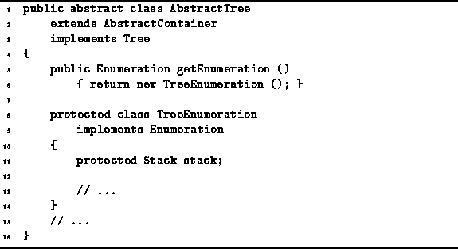

Data Structures and Algorithms
with Object-Oriented Design Patterns in Java
Data Structures and Algorithms
with Object-Oriented Design Patterns in JavaThis section describes the implementation of an enumeration which can be used to step through the contents of any tree instance. For example, suppose we have declared a variable tree which refers to a BinaryTree. Then we can view the tree instance as a container and print its contents as follows:
Tree tree = new BinaryTree ();
// ...
Enumeration e = tree.getEnumeration ();
while (e.hasMoreElements ())
{
Object obj = e.nextElement ();
System.out.println (obj);
}
Every concrete class that implements the Container interface
must provide a getEnumeration method.
This method returns an object that implements
the Enumeration interface
defined in Program  .
The enumeration can then be used to systematically visit the contents
of the associated container.
.
The enumeration can then be used to systematically visit the contents
of the associated container.
We have already seen that when we systematically visit the nodes of a tree,
we are doing a tree traversal.
Therefore, the implementation of the enumeration must also do a tree traversal.
However, there is a catch.
A recursive tree traversal method such as depthFirstTraversal
keeps track of where it is implicitly
using the Java virtual machine stack.
However, when we implement an enumeration
we must keep track of the state of the traversal explicitly.
This section presents an enumeration implementation which does
a preorder traversal of the tree and keeps track of the current state
of the traversal using a stack from Chapter .
Program introduces the inner class TreeEnumeration
which is declared within the AbstractTree class.
The TreeEnumeration class implements the Enumeration
interface defined in Program .
The TreeEnumeration contains just one field--stack.
As shown in Program ,
the getEnumeration method of the AbstractTree class
returns a new instance of the TreeEnumeration class each time it is called.

Program: AbstractTree class getEnumeration method and the TreeEnumeration class.
 Copyright © 1998 by Bruno R. Preiss, P.Eng. All rights reserved.
Copyright © 1998 by Bruno R. Preiss, P.Eng. All rights reserved.